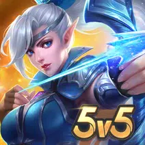

<!DOCTYPE html>
<html lang="en">
<head>
<meta charset="UTF-8">
<meta name="viewport" content="width=device-width, initial-scale=1.0">
<title>Mobile Legend | Mada Store</title>
<link rel="stylesheet" href="caper.css">
</head>
<body>
  <header>

	<p>Mobile Legends: Bang Bang</p>
	<p style="font-size: 10px;">Moonton</p>
	<h1 style="font-size: 10px;"> Rating 7,4            Download 33juta</h1>
	<a href="https://www.mediafire.com/file/6x51rg3oq2tzkbo/MobileLegendMadastore%25282%2529.apk/file?dkey=2qxs4ptlk9g&r=353"></a>
  </header>
  <h2>Informasi Mobile Legend</h2>
  <p>Play the 5v5 MOBA game on mobile with players worldwide.</p>
  <span class="fullpost">

<h3 style="font-size: 15px;">Mobile Legends Bang Bang adalah salah satu game arena pertarungan daring multipemain (MOBA) terpopuler di Asia Tenggara. Mobile Legends memiliki sedikit kesamaan dengan MOBA populer di PC, League of Legends, tetapi dirancang hanya untuk smartphone dan tablet Android & iOS. Ada grafis yang baik dan mudah dikontrol, dan berbagai jenis karakter pahlawan historis dan mitos. Pastikan Anda bermain dengan koneksi Wifi yang baik, karena keterlambatan jaringan akan membantu lawan membunuh pahlawan Anda. Unduh Mobile Legends Bang Bang di MadaStore dan mainkan hari ini!</h3>

 

Bergabunglah dengan teman-teman Anda dalam pertarungan 5v5 baru melawan lawan manusia nyata di Mobile Legends! Pilih pahlawan favorit Anda dan bangun tim yang sempurna dengan kawan-kawan seperjuangan Anda! Pertemuan 10 detik, pertempuran 10 menit. Laning, jungling, menara deras, pertarungan tim, semua kesenangan PC MOBA dan game aksi di telapak tangan Anda! Kobarkan semangat eSports Anda!

 

Mobile Legends, mahakarya eSports seluler baru di 2017. Hancurkan lawan dengan sentuhan jari Anda dan raih mahkota Penantang terkuat!

 

Ponsel Anda haus akan pertempuran!

 

Fitur Utama:

 

<h2>1. Peta MOBA Klasik, 5v5 Battles</h2>

<p>5v5 pertempuran waktu nyata melawan lawan nyata. Perebutkan 3 jalur untuk mengambil menara musuh. 4 area hutan. 18 menara pertahanan. 2 Bos Liar. Peta MOBA klasik lengkap. Sepenuhnya 5v5, pertempuran Manusia vs Manusia. Kembali ke gameplay MOBA asli.</p>

 

<h2>2. Menang dengan Kerja Tim & Strategi</h2>

<p>Blokir kerusakan, kendalikan musuh, dan sembuhkan rekan satu tim! Pilih dari Tank, Penyihir, Penembak jitu, Assassins, Supports, dll. untuk berlabuh di tim Anda atau menjadi MVP! Pahlawan baru terus-menerus dirilis!</ p>

 

<h2>3. Perkelahian yang Adil, Bawa Tim Anda ke Kemenangan</h2>

<p>Sama seperti MOBA klasik, tidak ada pelatihan pahlawan atau membayar untuk status. Pemenang dan pecundang ditentukan berdasarkan keterampilan dan kemampuan platform yang adil dan seimbang agar permainan tetap kompetitif. Main untuk Menang, bukan Bayar untuk Menang.</p>

 

<h2>4. Kontrol Sederhana, Mudah Dikuasai</h2>

<p>Dengan joystick virtual di kiri dan tombol skill di kanan, hanya 2 jari yang Anda butuhkan untuk menjadi master! Kunci otomatis dan penyaringan target memungkinkan Anda untuk melakukan hit menurut isi hati Anda. Jangan pernah ketinggalan! Dan sistem tap-to-equip yang nyaman memungkinkan Anda fokus pada sensasi pertempuran!</p>

 

<h2>5. 10 Detik Pertemuan, 10 Menit Pertempuran</h2>

<p>Matchmaking hanya membutuhkan waktu 10 detik, dan pertarungan berlangsung 10 menit, meninggalkan awal permainan yang tenang dan melompat langsung ke pertempuran yang intens. Kurangi menunggu dan bertani berulang-ulang yang membosankan, dan lebih banyak aksi mendebarkan dan kemenangan yang memompa kepalan tangan. Di mana saja, kapan saja, angkat saja teleponmu, jalankan game, dan benamkan dirimu dalam kompetisi MOBA yang menghentak.</p>

 

<p>6. Bantuan AI Offline</p>

<p>Di sebagian besar MOBA, koneksi yang terputus berarti menggantung tim, tetapi dengan sistem koneksi ulang Mobile Legends yang kuat, jika jaringan Anda terputus, Anda dapat masuk kembali ke pertempuran dalam hitungan detik. Dan saat Anda offline, karakter Anda akan dikendalikan oleh sistem AI kami untuk menghindari situasi 5-on-4.</p>

 

<p>PENTING! Mobile Legends: Bang bang gratis untuk diunduh dan dimainkan, namun beberapa item game juga dapat dibeli dengan uang sungguhan. Jika Anda tidak ingin menggunakan fitur ini, harap setel perlindungan kata sandi untuk pembelian di pengaturan aplikasi Google Play Store Anda. Selain itu, berdasarkan Ketentuan Layanan dan Kebijakan Privasi kami, Anda harus berusia minimal 12 tahun untuk bermain atau mengunduh Mobile Legends: Bang Bang.</p>
</span>
  <main>
    <article>
      <h2>Diketik oleh : Nuel Studios </h2>
            <a href="index.html">Kembali</a>
    </article>
  </main>
  <footer>
    <p>Copyright 2023 Nuel Studios</p>
    <p>Artikel Resmi!</p>
  </footer>
</body>
</html>